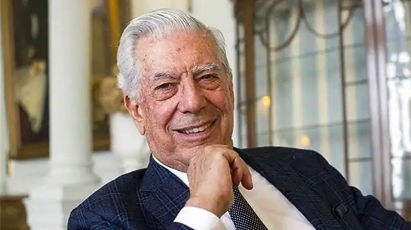

Хорхе Маріо Педро Вfргас Льйоса перуанський прозаїк, драматург, есеїст, філософ, публіцист, політичний і громадський діяч, лауреат Нобелівської премії 2010 за "картографію владних структур і гостре зображення людського опору, бунту й поразки".
Народився Варгас Льйоса 28 березня 1936 року в перуанському місті Арекіпа у сім'ї дипломата Ернесто Варгаса Мальдонадо (Ernesto Vargas Maldonado) та Дори Льйоса Урета (Dora Llosa Ureta). Слід зазначити, що у Латинській Америці люди часто мають подвійне прізвище: перше — від батька, друге — від матері, як це сталося у випадку Варгаса Льйоси та його батьків.
Невдовзі після народження хлопчика батьки розлучилися, і мати з сином переїхала у Болівію, де вони прожили наступні 9 років. Після чого повернулися на батьківщину, спочатку у провінційне містечко П'юру, через рік до Ліми. Тут батьки помирилися і знову почали жити разом. Закінчив католицьку школу, а у 1950 році — військове училище "Леонсіо Прадо". Вчився на філологічному факультеті університету Сан-Маркос. У 1958 — отримав стипендію Мадридського університету і виїхав до Європи та США. Тривалий час жив у Британії. З 1990-х рр. — переважно в Іспанії. Вже перший його роман "Місто і пси" (La ciudad у los perros, 1963) зробив письменника відомим, став культовою книгою для молоді. 1990 — балотувався на посаду президента Перу від партії "Демократичний фронт", але програв у другому турі Альберто Фухіморі, який згодом став диктатором і режим якого Варгас Льйоса жорстко і переважно справедливо критикував. 1993 — отримав громадянство Іспанії, не відмовляючись від перуанського — хоча був на межі втрати останнього через негативне ставлення до нього тогочасної влади Перу. Член Іспанської королівської академії (ісп. Real Academia Española). У листопаді 2014 року, за сприяння посольства Іспанії, Маріо Варгас Льйоса відвідав Україну, побувавши у Києві й Дніпрі. 11 листопада він поспілкувався зі студентами Київського Національного університету ім. Тараса Шевченка. Слава прийшла до Маріо Варгаса Льйоси у 1960-х, коли він написав "Місто і пси", "Зелений дім", "Розмову в Соборі". Перший роман Варгаса Льйоси "Місто і пси" ("La ciudad y los perros", 1963) спричинив у Лімі скандал і був підданий осуду з боку офіційної влади, після чого книгу було заборонено і спалено. Роман показав, які безчинства дідівщини існують у перуанській армії. "Місто і пси" став культовою книгою для молодіжної читацької аудиторії СРСР. У СРСР і США роман було екранізовано. Радянська кінострічка "Ягуар" була відзнята чилійським режисером Себастьяном Аларконом у 1986 році. Твори Варгаса Льйоси відображають його бачення Перу і його життєвий досвід як перуанця. З часом він поступово розширив свій діапазон і взявся за висвітлення проблем, що постають в інших частинах світу.